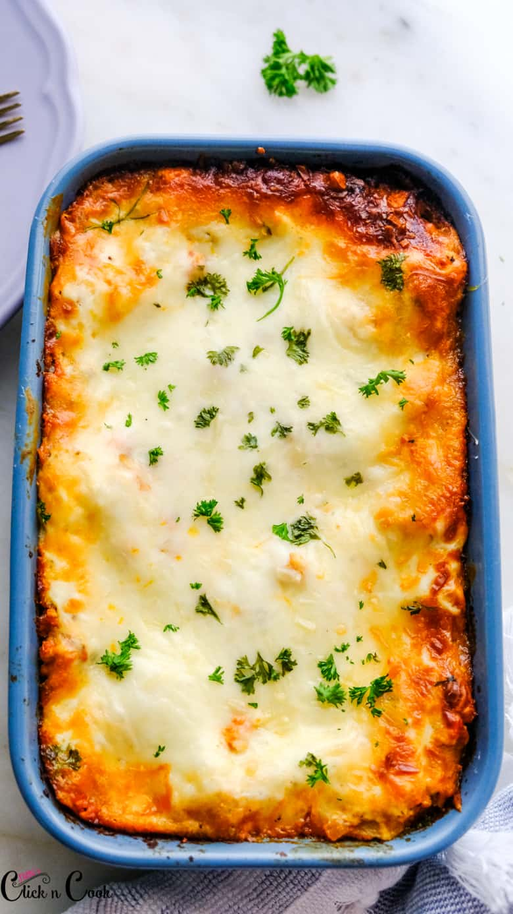

lasagna-recipe

This vegetarian lasagna recipe is made with meaty shiitake and crimini mushrooms, spinach, and ricotta and mozzarella cheeses.
It feeds a crowd and will satisfy both vegetarian and meat-eating guests!
Ingrediants
- 2 (10-ounce) boxes frozen chopped spinach, thawed and squeezed in clean towel for excess moisture
- 1 pound lasagna noodles (16 to 20 noodles)
- 1 (15 or 16-ounce) container ricotta cheese
- 1/4 cup chopped fresh basil
- 1/4 pound shredded pecorino or Parmesan cheese (about 1 cup)
- 1 pound shredded mozzarella cheese (about 4 cups)
Method
- Sauté the mushrooms
- Make the sauce
- Boil and drain the lasagna noodles
- Assemble the lasagna
- Repeat the layers
- Cover with foil and bake
Back to home page